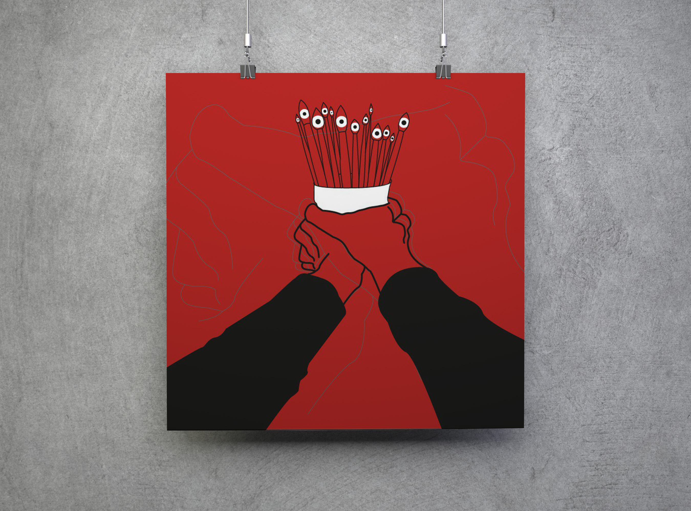

Дизайны плакатов
Для меня работа с текстом и буквами - это про комфорт и удовольствие. Поэтому в своих дизайнах почти всегда я использую типографику, которая отражает моё видение мира и склонность к моему редакторскому существу. Я люблю работать в разных направлениях и жанрах, поэтому работы не кажутся повторяющимися и выглядят всегда по-разному.
Коллекция плакатов более обширная, чем представлена здесь, поэтому если Вас интересует именно этот вид работ, Вы всегда можете запросить расширенное портфолио в личной переписке.
Проект "Объективно-субъективное; субъективно-объективное"
Проект представлен двумя авторскими работами, включёнными в полиптих,
который мы создавали вместе с другим дизайнером.
Работы вдохновлены кастой Эпсилонов из романа "О дивный новый мир" Олдоса Хаксли
и их отстуствием творческого влияния на общество. Задумка заключается в сравнении литературного мира и реального,
в котором многие люди также лишены возможности творить по разным причинам.
Не только из-за социального влияния, но и из-за внутренних ограничений самих людей.
Проект выполнен в цветовой гамме: чёрный, белый, красный. Акцент красным используется для отражения
внутренних метаний человека и принятия решений.